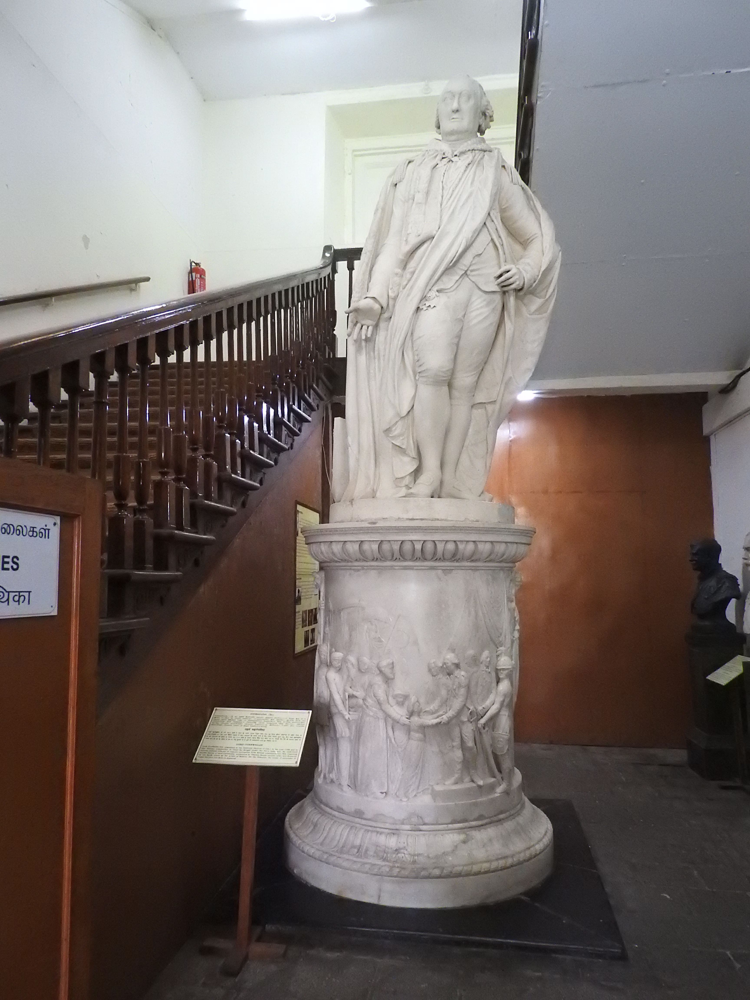

Economic Impact — Drain of Wealth & Land Revenue Systems
📂 Modern Indian History⚖️ Weight: 0.9🎯 Expected: 1–2 Qs
📚 Core Content & PYQ Alignment
BPSC PATTERNThree systems matching: BPSC consistently asks "Match the land revenue system with the region/introducer/year." The three systems — Zamindari (1793), Ryotwari (1800s), Mahalwari (1822) — are the highest-yield facts in this topic. Know all three columns: system, introducer, region.
BPSC PATTERNDrain of Wealth + book matching: BPSC asks "Who wrote 'Poverty and Un-British Rule in India'?" → Dadabhai Naoroji. "Who wrote 'Economic History of India'?" → R.C. Dutt. "Who propounded the Drain of Wealth theory?" → Dadabhai Naoroji. Book-to-author matching is a high-probability question format.
BIHAR ANGLEBihar under the Permanent Settlement: Bihar was under the Zamindari System (1793) — its zamindars became hereditary landowners who exploited peasants. This led to the Bakasht movement (1930s–50s) led by Swami Sahajanand Saraswati, and Bihar was one of the first states to abolish zamindari (1950). The Bihar connection is exam-critical.
💡 Deep-dive ready: Complete analysis of all three land revenue systems with the drain of wealth theory, Bihar's zamindari experience and the Bakasht movement, comparative tables, and 7 exam predictions:
Land Revenue Systems & Drain of Wealth Detail →
A. The Three Land Revenue Systems — Master Comparison EXAM CORE
BPSC tests this table more than any other in this topic. Learn every column: system, introducer, year, region, and settlement made with whom.
Attribute
Permanent Settlement (Zamindari)
Ryotwari System
Mahalwari System
Introduced by
Lord Cornwallis
Thomas Munro & Alexander Read
Holt Mackenzie
Year
1793
Late 1790s–1820
1822
Region
Bengal, Bihar, Orissa
South India (Madras, Bombay)
North-Western Provinces (UP, Punjab, Delhi)
Settlement with
Zamindar (landlord)
Ryot (individual peasant)
Village community (mahal)
Revenue fixed?
Permanently (never changed)
Revised every 30 years (later 5)
Revised periodically
Land ownership
Zamindar = owner
Peasant = owner (govt collects directly)
Village = owner (collectively)
Government share
10/11th (zamindar keeps 1/11th)
Direct from peasant (~50% of produce)
From village collectively (~50%)
Peasant protection
None — zamindar raises rent at will
Direct settlement but high assessment
Collective responsibility
Key flaw
Peasant exploitation; zamindar profited from rising output while government share was frozen
Over-assessment; peasants couldn't pay during famines
Village elite captured the system
🧠 Mnemonic — "Z-R-M: East-South-North" Zamindari → East (Bengal-Bihar-Orissa, Cornwallis 1793) Ryotwari → South (Madras-Bombay, Munro 1820) Mahalwari → North (NW Provinces, Mackenzie 1822) "East-South-North: Z-R-M" — three systems, three regions, three decades (1793, ~1800, 1822).

Lord Cornwallis — the Governor-General who introduced the Permanent Settlement (Zamindari System) in 1793. The Cornwallis statue at Fort St. George, Chennai.
B. The Permanent Settlement (Zamindari System, 1793) — Detailed
Introduced by: Lord Cornwallis in 1793, covering Bengal, Bihar, and Orissa (the Diwani territories).
Key principle: the zamindar was made the hereditary owner of the land. The government's revenue demand was fixed permanently — it would never change regardless of the actual agricultural output.
Revenue split: the zamindar paid 10/11th of the collected revenue to the government and kept 1/11th (~9%) for himself.
The zamindar's incentive: since the government's share was fixed, any increase in agricultural output went entirely to the zamindar. This encouraged zamindars to increase production — but NOT to share the gains with peasants.
The peasant's fate: the ryot (peasant cultivator) had no legal protection. The zamindar could raise the peasant's rent at will, evict the peasant, or use coercive methods. The peasant became a tenant-at-will on land he had traditionally cultivated.
Default and auction: if the zamindar failed to pay the fixed revenue, his land was auctioned. This led to frequent transfers of zamindari and further instability for peasants.
Historical impact: the Permanent Settlement created a class of loyal zamindar collaborators for the British — the zamindars became a political support base for colonial rule. It also impoverished the peasantry, especially in Bihar where the Bakasht movement (1930s–50s) demanded the abolition of zamindari.
C. The Ryotwari System — Detailed
Introduced by: Captain Alexander Read and Sir Thomas Munro (later Governor of Madras) in the late 1790s–early 1800s.
Region: Madras Presidency, Bombay Presidency, parts of Assam and Coorg.
Key principle: the revenue settlement was made directly with the ryot (individual peasant cultivator) — no zamindar intermediary. The peasant was recognised as the landowner.
Revenue revision: the revenue was not permanently fixed — it was revised every 30 years (later reduced to 5 years). The government assessed the productivity of the land and set the revenue accordingly.
Assessment: the revenue was typically set at 50% of the gross produce (in cash or kind). This was often excessive and left peasants struggling, especially during famines.
Advantage over Zamindari: the peasant was not at the mercy of a zamindar — the settlement was with the government directly. But over-assessment still caused hardship.
Thomas Munro's role: Munro argued that the ryotwari system was more aligned with traditional Indian land tenure and that it would be fairer to peasants. He became Governor of Madras in 1820 and extended the system.
D. The Mahalwari System (1822) — Detailed
Introduced by: Holt Mackenzie in 1822 in the North-Western Provinces (later UP; also extended to Punjab and Delhi).
Region: North-Western Provinces, Punjab, Delhi, parts of Central India.
Key principle: the revenue settlement was made with the mahal (village) as a unit. The village community was collectively responsible for the revenue — if one villager defaulted, others had to cover the shortfall.
Compromise system: it was a hybrid — like the Zamindari (it had an intermediary, the village), and like the Ryotwari (the revenue was revised periodically, not permanently fixed).
Revenue revision: revised periodically (not permanently fixed like the Zamindari system).
Assessment: based on the total produce of the village, with the village elders responsible for distribution among individual cultivators.
Flaw: the village elite (landlords, headmen) often captured the system, exploiting smaller cultivators while the collective responsibility masked individual exploitation.
E. The Drain of Wealth — Dadabhai Naoroji's Theory
The theory: Dadabhai Naoroji (the "Grand Old Man of India") argued that British rule was draining India's wealth to Britain without any economic return — a unilateral transfer of wealth that impoverished India and caused famines.
The book: 'Poverty and Un-British Rule in India' (1901) — Naoroji estimated India was losing £30–40 million per year (in 19th-century values) through the drain.
Three channels of drain:
Home Charges: salaries and pensions of British officials, dividends to EIC shareholders, military costs (including wars outside India), interest on railway loans, cost of the India Office in London. This was the largest component.
Unilateral transfer of profits: British companies operating in India (plantations, railways, trade) remitted their profits to Britain without reinvesting in India.
Remittance of savings: British officials who served in India saved part of their salaries and remitted them to Britain when they retired — taking wealth out of India permanently.
Key argument: the drain was not just a transfer — it was a structural extraction. The wealth India lost was not compensated by any investment or trade return. This was the fundamental cause of India's poverty and recurring famines.
Other contributors: R.C. Dutt ('Economic History of India', 2 vols, 1901–03), M.G. Ranade, G.V. Joshi, and William Digby all contributed to the economic critique of colonialism, but Naoroji was the primary architect of the Drain theory.
🧠 Mnemonic — Drain Channels "H-U-R": Home charges (salaries, pensions, military, interest) → largest component Unilateral profit transfer (British companies) → no reinvestment in India Remittance of savings (retiring officials) → wealth leaves permanently "Naoroji said H-U-R: Home, Unilateral, Remittance — three channels draining India."
The drain of wealth: India's raw materials (cotton, indigo, opium) were exported to Britain, processed into manufactured goods, and sold back to India — a one-way flow of wealth.
📊 Land Revenue Systems by Region — Visual Map
The three systems map to three regions of British India — East, South, and North. Know the geography.
Three channels: Home charges, Profit transfer, Savings remittance
Economic History author
R.C. Dutt
'Economic History of India' (2 vols, 1901–03)
Bihar land system
Zamindari (1793)
Led to Bakasht movement; zamindari abolished 1950
🔶 Bihar Connection
🏛️ Bihar & the Permanent Settlement — From Zamindari to Bakasht
Bihar under Zamindari: Bihar was part of the Bengal Presidency and thus under the Permanent Settlement (1793). Bihar's zamindars became hereditary landowners who collected rent from peasants with no legal protection. The system created a class of powerful zamindars (the Darbhanga Raj, the Bettiah Raj, the Hathwa Raj) who dominated Bihar's agrarian economy for over 150 years.
Peasant exploitation: the Permanent Settlement allowed zamindars to raise rent at will, evict peasants, and extract arbitrary dues (abwabs). Bihar's peasants were among the most exploited in India — the zamindar's share of the peasant's produce often exceeded 50%.
The Bakasht movement (1930s–50s): a landmark peasant movement in Bihar led by Swami Sahajanand Saraswati and the Kisan Sabha. "Bakasht" land was land cultivated by the tenant but owned by the zamindar. The movement demanded that bakasht land be transferred to the cultivating tenant. This was one of India's most powerful anti-zamindari movements.
Zamindari abolition (1950): Bihar was one of the first states to abolish the zamindari system after Independence (the Bihar Land Reforms Act, 1950). This was a direct consequence of the Permanent Settlement's legacy of peasant exploitation and the decades of peasant movements.
Bihar zamindars and the British: the major zamindars of Bihar (Darbhanga, Bettiah, Hathwa) were loyal supporters of the British — they provided political and financial support for colonial rule. This zamindar-British alliance was the social basis of the Permanent Settlement.
🔗 Cross-Topic Connections
↔ Topic 24 (Advent of Europeans): The English EIC's commercial expansion (factories, Farman of 1717) created the economic foundation that the land revenue systems formalised. The Diwani of 1765 (Topic 25) was the legal basis for the Permanent Settlement. ↔ Topic 25 (Plassey and Buxar): The Diwani of 1765 gave the EIC the right to collect revenue in Bengal-Bihar-Orissa — directly leading to the Permanent Settlement (1793) as the mechanism for extraction. ↔ Topic 27 (Revolt of 1857): The economic exploitation caused by the land revenue systems (over-assessment, peasant dispossession, zamindar oppression) was a major cause of the 1857 Revolt. Bihar's Kunwar Singh led the revolt partly in response to zamindari exploitation. ↔ Topic 29 (INC Formation): Dadabhai Naoroji, who articulated the Drain of Wealth theory, was a founding member and thrice President of the INC. The economic critique of colonialism was the INC's earliest ideological foundation.
📰 Current Relevance & Potential Traps
System ↔ region trap: Zamindari = East (Bengal-Bihar-Orissa), NOT South. Ryotwari = South (Madras-Bombay), NOT Bengal. Mahalwari = North (NW Provinces), NOT South. BPSC swaps these constantly.
Year trap: Zamindari = 1793 (NOT 1765 or 1772). 1765 = Diwani; 1772 = Hastings' reforms. Ryotwari = ~1800–1820 (not a single year). Mahalwari = 1822.
Settlement-with trap: Zamindari = zamindar (landlord). Ryotwari = ryot (individual peasant). Mahalwari = mahal (village community). Don't confuse who the settlement is made with.
Book-author trap: Naoroji = 'Poverty and Un-British Rule in India' (NOT 'Economic History'). Dutt = 'Economic History of India' (NOT 'Poverty and Un-British Rule'). Don't swap the books and authors.
Drain amount trap: Naoroji estimated £30–40 million/year (NOT £3–4 million or £300–400 million). The order of magnitude matters.
(1) System ↔ region matching (HIGH): "Match: Permanent Settlement—Bengal-Bihar-Orissa, Ryotwari—Madras-Bombay, Mahalwari—NW Provinces." Classic BPSC matching format.
(2) Drain of Wealth + author (HIGH): "Who propounded the Drain of Wealth theory?" → Dadabhai Naoroji. "Which book?" → 'Poverty and Un-British Rule in India' (1901).
(3) Bihar under Zamindari (MEDIUM): "Bihar was under which land revenue system?" → Permanent Settlement (Zamindari). "Which movement demanded zamindari abolition in Bihar?" → Bakasht movement (Swami Sahajanand Saraswati).
(4) Introducer matching (MEDIUM): "Permanent Settlement was introduced by?" → Lord Cornwallis. "Ryotwari by?" → Thomas Munro. "Mahalwari by?" → Holt Mackenzie.
(5) "Not correctly matched" (LOW): Likely trap: "Ryotwari — Lord Cornwallis — Bengal" (WRONG — Ryotwari was Munro, South India) or "Economic History of India — Dadabhai Naoroji" (WRONG — by R.C. Dutt).
✍️ MCQ Practice Set — 25 Questions (BPSC Level)
Q1. The Permanent Settlement (Zamindari System) was introduced by whom and in which year?
✅ Correct Answer: (A) — Lord Cornwallis introduced the Permanent Settlement in 1793 in Bengal-Bihar-Orissa. Zamindars became landowners; revenue fixed permanently. Hastings (1772) and Wellesley (1798) preceded/followed with different reforms; Munro introduced Ryotwari.
Q2. Under the Permanent Settlement of 1793, what fraction of the revenue did the zamindar keep?
✅ Correct Answer: (A) — The zamindar kept 1/11th (~9%) and paid 10/11th to the government. This was fixed permanently. The zamindar's profit increased as output grew, but the peasant got no share of the gains.
Q3. The Permanent Settlement was applicable to which provinces?
✅ Correct Answer: (A) — The Permanent Settlement applied to Bengal, Bihar, and Orissa — the EIC's Diwani territories. Bihar was part of the Bengal Presidency and thus under the Zamindari system, which led to the Bakasht movement later.
Q4. The Ryotwari System was introduced by whom?
✅ Correct Answer: (B) — The Ryotwari System was introduced by Captain Alexander Read and developed by Sir Thomas Munro in the late 18th–early 19th century. Settlement was made directly with the ryot (peasant), not zamindars.
Q5. Under the Ryotwari System, the revenue settlement was made with whom?
✅ Correct Answer: (B) — Under Ryotwari, the settlement was made directly with the individual peasant (ryot). No zamindar intermediary. The government collected revenue directly. Revenue was revised every 30 years (later 5), not permanently fixed.
Q6. The Mahalwari System was introduced by whom and in which year?
✅ Correct Answer: (C) — Holt Mackenzie introduced the Mahalwari System in 1822 in the North-Western Provinces. Settlement was made with the village (mahal) collectively — a compromise between Zamindari and Ryotwari.
Q7. Under the Mahalwari System, the revenue settlement was made with whom?
✅ Correct Answer: (C) — Under Mahalwari, the settlement was made with the mahal (village community) collectively. The village was responsible for the revenue — a hybrid of Zamindari (intermediary) and Ryotwari (periodic revision).
Q8. Match the land revenue system with the region where it was primarily implemented.
✅ Correct Answer: (C) — Mahalwari → North-Western Provinces (UP, Punjab, Delhi). Permanent Settlement was Bengal-Bihar-Orissa (NOT South); Ryotwari was South India (NOT Bengal or Punjab). Three systems, three regions: East-South-North.
Q9. The concept of 'Drain of Wealth' from India was most prominently articulated by which leader?
✅ Correct Answer: (A) — Dadabhai Naoroji articulated the Drain of Wealth theory in 'Poverty and Un-British Rule in India' (1901). He estimated India lost £30–40 million/year through home charges, profit transfers, and savings remittances. R.C. Dutt, Ranade, and Joshi contributed but Naoroji was the primary architect.
Q10. The book 'Poverty and Un-British Rule in India' was written by:
✅ Correct Answer: (B) — Naoroji wrote 'Poverty and Un-British Rule in India' (1901). R.C. Dutt wrote 'Economic History of India' (2 vols, 1901–03). Both are exam-relevant: Naoroji = Drain theory; Dutt = Economic History. Don't swap the books.
Q11. The 'Home Charges' under British rule referred to:
✅ Correct Answer: (C) — Home Charges included salaries/pensions of British officials, EIC dividends, military costs (including wars outside India), railway interest, and India Office costs. This was the largest component of the 'drain' — wealth extracted without economic return.
Q12. Which of the following was NOT a channel of the 'Drain of Wealth' from India to Britain?
✅ Correct Answer: (D) — Tax revenue spent on Indian infrastructure was domestic spending within India, NOT a channel of drain. The three channels were: Home charges, unilateral profit transfers, and savings remittances — all unilateral transfers of wealth to Britain without economic return.
Q13. Consider about the Permanent Settlement: 1. The zamindar became the owner of the land. 2. The revenue was fixed permanently. 3. The ryot (peasant) was protected from arbitrary rent increases. Which is/are correct?
✅ Correct Answer: (A) — Statements 1 and 2 are correct. Statement 3 is WRONG — the Permanent Settlement did NOT protect the ryot. The zamindar could raise rent at will. The absence of peasant protection was a major flaw of the system.
Q14. The Permanent Settlement is also known as:
✅ Correct Answer: (B) — The Permanent Settlement (1793) is also known as the Zamindari System because it made the zamindar the hereditary owner. The zamindar was the intermediary who collected from peasants and paid a fixed amount to the government.
Q15. Which land revenue system was a compromise between the Zamindari and Ryotwari systems?
✅ Correct Answer: (C) — The Mahalwari System (1822) was a compromise: like Zamindari (had an intermediary — the village), and like Ryotwari (revenue revised periodically, not permanently fixed). The village was collectively responsible.
Q16. Who was the Governor-General who introduced the Permanent Settlement?
✅ Correct Answer: (B) — Lord Cornwallis (GG 1786–1793) introduced the Permanent Settlement in 1793. He also introduced the Cornwallis Code (separation of revenue and judiciary) and civil service reforms.
Q17. Arrange in chronological order: 1. Permanent Settlement 2. Ryotwari System 3. Mahalwari System
✅ Correct Answer: (A) — Correct order: Permanent Settlement (1793) → Ryotwari (~1800–1820) → Mahalwari (1822). Zamindari in East first, then Ryotwari in South, then Mahalwari in North.
Q18. The 'Deprived Peasant' under the Permanent Settlement was most vulnerable because:
✅ Correct Answer: (B) — Under the Permanent Settlement, the government's revenue was fixed, but the zamindar could raise the peasant's rent at will. The peasant had no legal protection and was at the mercy of the zamindar — the most exploited class.
Q19. The Economic History of India (two volumes) was written by:
✅ Correct Answer: (B) — Romesh Chunder Dutt (R.C. Dutt) wrote 'Economic History of India' (2 vols, 1901–03). Naoroji wrote 'Poverty and Un-British Rule in India'. Don't swap: Naoroji = Drain theory; Dutt = Economic History.
Q20. Which of the following is NOT correctly matched?
✅ Correct Answer: (D) — The last option is wrongly matched: Ryotwari was introduced by Thomas Munro (NOT Cornwallis) in South India (NOT Bengal). Cornwallis introduced the Permanent Settlement (Zamindari) in Bengal (1793). The other three are correctly matched.
Q21. Under the Ryotwari System, the revenue was revised every:
✅ Correct Answer: (B) — Under Ryotwari, the revenue was revised every 30 years (later reduced to 5). Unlike the Permanent Settlement (fixed forever), Ryotwari revenue was NOT permanent — the government could adjust it based on productivity.
Q22. Bihar was under which land revenue system during British rule?
✅ Correct Answer: (C) — Bihar was under the Permanent Settlement (Zamindari, 1793) because it was part of the Bengal Presidency under the Diwani of 1765. Bihar's zamindars became hereditary landowners. This led to the Bakasht movement and zamindari abolition (1950).
Q23. Dadabhai Naoroji estimated that India was losing approximately how much per year through the 'Drain of Wealth'?
✅ Correct Answer: (B) — Naoroji estimated India lost approximately £30–40 million per year (19th-century values) through the drain. This was a massive sum relative to India's GDP. He argued this unilateral transfer was the primary cause of India's poverty and famines.
Q24. Which of the following was a major consequence of the Permanent Settlement for Bihar's peasantry?
✅ Correct Answer: (B) — In Bihar under the Permanent Settlement, zamindars became powerful hereditary landowners who exploited peasants with no legal protection. This led to the Bakasht movement (1930s–50s) led by Swami Sahajanand Saraswati, and Bihar abolished zamindari in 1950.
Q25. The Bakasht movement in Bihar was led by which leader?
✅ Correct Answer: (B) — Swami Sahajanand Saraswati led the Bakasht movement in Bihar (1930s–50s), demanding that bakasht land (tenant-cultivated but zamindar-owned) be transferred to the cultivating tenant. He founded the Kisan Sabha and was one of India's most powerful peasant leaders.